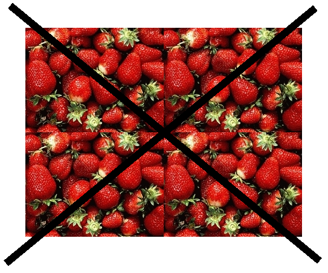

<< Back to the main page
What is the texturize plugin ?
What is it good for ?
Imagine that you have an image with a small sample of a texture, like a
few strawberries (out of a plate full of them), a few square inches of
grass (from a large grassy field), or a few dozens of your cat's hairs
(your cat really has more than that). If you want to generate a
larger texture with this small image, you could just copy-paste it,
and put the copies (or "patches") one next to another, but that wouldn't
produce a very good result, since the right (or top) part of the image
usually doesn't correspond to its left (or bottom) part, when two copies
of the image are assembled.

A few images are indeed designed to be copy-pasted one next to another
and still look natural, but the result is usually periodic and very
monotonous (it looks like wallpaper -- the one on your walls, not the
one on your computer desktop!).
The Texturize plugin allows you to get all the strawberries, the whole
grass field, or your whole cat (well, it doesn't guess you cat's shape,
but you can at least get a lot of his hairs!). Moreover, Texturize
lets you actually create tileable textures (which is great for game
design). Have a look at the examples section to see what it looks like.
A program named "The GIMP" ? Is that a joke ?
It sure isn't! GIMP stands for "GNU Image Manipulation Program". You
probably already know Photoshop, the leader image program by Adobe.
Well, GIMP does pretty much the same as Photoshop (if you are a
Photoshop power user, you'll find that it still lacks some functions,
though). With a small difference: Photoshop costs several hundreds of
dollars, whereas GIMP costs absolutely nothing (it is "open source"
software, just like Firefox, Linux, or OpenOffice.org). You can download
it for free from www.gimp.org, for
Windows, Mac OS X or Linux. And our plugin is designed for The GIMP.
Similar software
Resynthesizer
and Textureops
are two gimp plugins from the same author that do a similar job with
different algorithms.
Who wrote the plugin ?
The two authors of the first version are Emmanuel Cornet and Jean-Baptiste
Rouquier, students in the "Ecole normale supérieure" (ENS) in
France. This plugin is the result of a school project in a Computer
Vision class, for Renaud
Keriven (teacher). However, its development continues even after
the class is finished.
The Texturize plugin is based on a theoretical computer science article,
called "Graphcut
Textures: Image and Video Synthesis Using Graph Cuts",
written by Vivek
Kwatra, Arno
Schödl, Irfan Essa,
Greg Turk and Aaron Bobick.
We also borrowed a little part of our code (the graph cut part) from Yuri
Boykov and Vladimir
Kolmogorov. Here
is the webpage of their article (with a link to the code).
The plugin is fully translated into French.